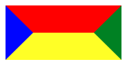

前端开发工作中经常会碰到奇形怪状的图形，当然也少不了UI设计童鞋的脑洞和创意啦，初级的开发人员可能会选择使用图片做背景加上位置属性实现，不过很多时候，CSS能实现的就不要再动用PS等工具了，时间宝贵，经验更宝贵，毕竟简单的搬砖很容易就会，不动“声色“的实现才是来之不易的经（踩）验（坑）
完事开通难，先看CSS的border应用有哪些属性，使用谷歌或者火狐打开一个网页，F12，属性那是相当的多，不过从border-left-*这些的来看，肯定是细致到某一部分，压缩一下可以少1/3
创建一个div，按颜色区分看边框的分布情况，直观的感受一下
<div class="border-demo border-init"></div>
.border-init {
border-color: red green yellow blue;
}

充分的发挥想象力，一个信封就出来了，高度40px，宽度随窗口的宽度，边框的颜色取值border-color:：上 右 下 左 顺时针方向渲染
再给div外层加一个div限制一下宽度比如80px
.border-outter { width: 80px; }
.border-demo {
border: solid 40px;
}
//以上样式后面一直要用，就不重复写了
.border-init {
border-color: red green yellow blue;
}
<div class="border-outter">
<div class="border-demo border-init"></div>
</div>
画重点：左右两边的边框宽度都是40px，反应到css外层的div宽度刚好是80px，完美的包裹。
到这一步，基本的规则形状特别是三角形可以全部搞定了，只需稍微调整边框的宽度，举个栗子，我们想得到一个右三角，即箭头朝右
这个时候只需要把左侧边框显示出来就可以，其他的边框设为透明
大多数情况下，div盒子的内容不会空，我们加一个小小的高度
<div class="border-demo border-init"></div>
.border-ladder {
height: 10px;
border-color: red green yellow blue;
}
调整各边框的色值，既可以得到不同方向的梯形，到这一步，我们基本没有做什么事情已经可以获得三角形和梯形这样的样式
分割线------------------------------------------------------------------------
爱美之心人皆有之， 直来直去，有棱有角总让人感觉不舒服，那就委婉一些，这个时候border-radius就要上场，上面的栗子添加圆弧
<div class="border-demo border-init"></div>
.border-init {
border-color: red green yellow blue;
}
一个四边框弧度为50%的div出来了，一个椭圆就这么出来，一个接近青蛙头像的盒子产生
.border-init {
border-color: red green yellow blue;
}
<div class="border-outter">
<div class="border-demo border-init"></div>
</div>
这就是一个标准的圆形，有了圆形，那扇形就不远了：
结合CSS3动画，一个雷达扫描图就出来了
事实上，border-radius的取值未必就是px，可以通过百分比的形式获取各种形状，典型格式可能值
border-radius: 30px;
border-radius: 25% 10%;
border-radius: 10% 30% 50% 70%;
border-radius: 10% / 50%;
border-radius: 50% 20% / 10% 40%;
举个栗子
微信红包页顶部的圆弧形背景